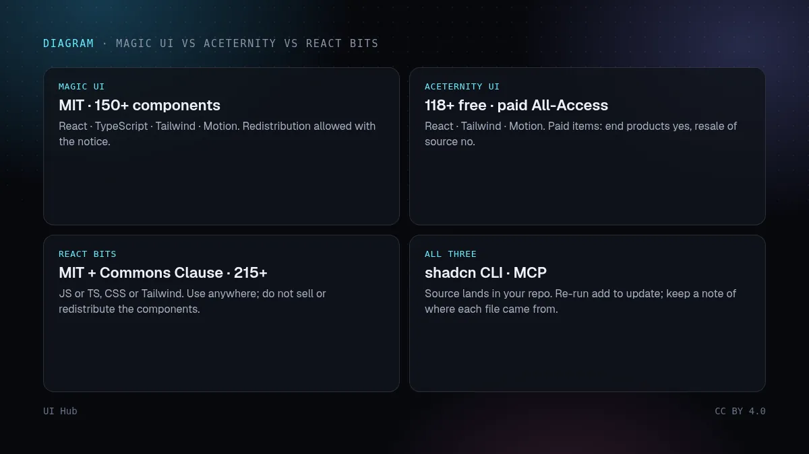
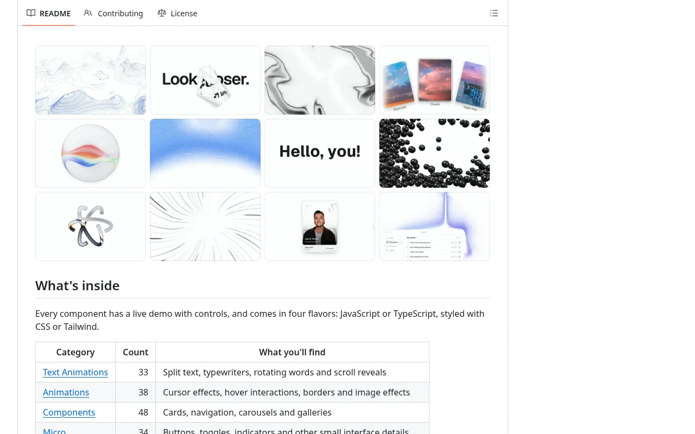

有人问「落地页用什么动效组件」时，最常被提到的就是 Magic UI、Aceternity UI 和 React Bits。三者交给你的都是源代码，而不是一个要导入的包；现在都用 shadcn 命令行安装；也都有免费层。所以它们很容易被混淆，也很容易被混用在同一个项目里。我们在 2026 年 11 月 16 日逐一核对了官网、GitHub 仓库和许可证。特效重叠很多，条款却不一样，而条款是事后改不了的部分。

四张卡片的对照网格：Magic UI 为 MIT 许可，150+ 个组件，基于 React、TypeScript、Tailwind 和 Motion；Aceternity UI 有 118+ 个免费组件，另有付费 All-Access 许可；React Bits 有 215+ 个组件，提供 JS 或 TS 搭配 CSS 或 Tailwind 的版本，许可为 MIT 加 Commons Clause；三者都用 shadcn 命令行安装 · 示意图：UI Hub 原创，CC BY 4.0
一览（2026 年 11 月 16 日）
- Magic UI。官网写着「150+ 个免费开源的动效组件和特效，基于 React、TypeScript、Tailwind CSS 和 Motion」，定位是「shadcn/ui 的最佳搭档」。许可证：MIT。GitHub 仓库约 2.33 万星。安装：
pnpm dlx shadcn@latest add @magicui/globe，「安装流程与 shadcn/ui 完全相同」。付费：Magic UI Pro，标价一次性 199 美元，含 8 个模板和 50+ 个高级组件。
- Aceternity UI。官网写着「200+ 个可直接上线的组件、区块、模板、落地页和微交互，基于 React、Tailwind CSS 和 Motion」。免费区列出 118+ 个组件；定价页和常见问题取整为 100+，并说明免费层可用于个人和商业项目。安装：
npx shadcn@latest add @aceternity/3d-card，也可通过它的 MCP 组件源安装。付费：All-Access，11 月 16 日标价为一年 169 美元、终身 199 美元（原价 249 和 299 美元），最多 10 人的团队版 1590 美元。我们没有找到这个组件库本身的公开开源仓库；付费内容适用官网公布的 Aceternity 许可。
- React Bits。README 写着「215+ 个免费的 React 动效组件和背景」，分五类：33 个文字动画、38 个动画、48 个组件、34 个微交互、63 个背景。每个组件有四种版本：JavaScript 或 TypeScript，搭配普通 CSS 或 Tailwind。许可证：MIT 加 Commons Clause。GitHub 仓库约 5.2 万星。安装：
npx shadcn@latest add @react-bits/SplitText-TS-TW，后缀决定版本；也可以用 jsrepo 装同一份文件。付费：React Bits Pro，README 描述为 230 个动效组件、300 个页面区块、300 个应用界面区块、15 个模板和 20 个智能体技能。
2026 年 11 月 16 日 Aceternity UI 的定价页，列出免费方案和付费 All-Access 许可 · 截图：Aceternity UI（ui.aceternity.com），2026-11-16 截取，版权归原站所有
真正的区别在许可证
复制粘贴的代码会变成你的代码，所以许可证决定了之后你能拿它做什么。三个库在这里的立场各不相同。
- Magic UI 是纯 MIT。可以使用、修改、发布，甚至再分发这些组件，只要附上版权和许可声明。这是三者中最宽松的。
- React Bits 是 MIT 加 Commons Clause。它的 LICENSE.md 允许任何用途，包括商业用途，但不得出售、再许可或再分发组件本身，无论单独、打包还是移植版本。因为加了这一条，GitHub 把它的许可证显示为「Other」而不是 MIT，它也不属于 OSI 意义上的开源许可。把 React Bits 的背景用在客户网站上没问题；出售主要由 React Bits 组成的模板或组件包则不行。
- Aceternity UI 把免费和付费分开。常见问题说明免费组件可用于个人和商业项目。付费区块和模板适用 Aceternity 许可：可以为自己或客户制作不限数量的最终产品，但不得再分发源文件，也不得在任何市场上转售模板或衍生产品。
实用规则：如果你做的是网站和应用，三个都能用。如果你做的是给其他开发者安装的东西，比如启动套件、主题、出售的模板或你自己的组件库，只有 Magic UI 可以不经询问直接把组件放进去。
技术栈和安装：比看上去更接近
三者都面向 React，Magic UI 和 Aceternity 都把 Tailwind CSS 和 Motion 列为技术栈。如果项目不用 Tailwind 或 TypeScript，就选 React Bits，因为每个组件也提供纯 JavaScript 加普通 CSS 的版本。三者都发布了 shadcn 组件源，所以一个 components.json 可以同时从三处拉取，shadcn 的 MCP 服务器也能让编程智能体替你搜索和添加组件。Aceternity 和 React Bits 都在自己的页面上推荐了这种智能体用法。
复制粘贴的另一面是：更新不会自己到来。你加进来的都是仓库里的文件；库修了 bug，你需要重新运行添加命令并检查差异。记下每个组件来自哪里。
我们会怎么选
- 已经在用 shadcn/ui，想要精致的营销区块：从 Magic UI 开始。同样的命令行、同样的约定，MIT 许可也不会碍事。
- 想快速做出整张落地页，并且愿意付费：看 Aceternity。它的强项是付费的区块、模板和完整页面，而不只是单个特效。
- 想要抢眼的文字特效和整屏背景，或者项目是纯 JavaScript 加 CSS：React Bits 的免费目录最大、版本最多。只是别拿去转售。
- 混着用：做产品没问题，但要控制动效预算。一页里塞进三个库的特效，是让页面变慢、变吵的最快方法。
截至 2026 年 11 月 15 日，UI Hub 收录了三家的官方演示卡片：Magic UI 45 张、Aceternity UI 34 张、React Bits 30 张。单独了解每个库，可以读我们的 Magic UI 深度解析和 Aceternity UI 深度解析。

2026 年 11 月 16 日 GitHub 上的 React Bits README：每个组件有四种版本（JavaScript 或 TypeScript，搭配 CSS 或 Tailwind），以及按类别统计的组件数量表 · 截图：GitHub · DavidHDev（github.com），2026-11-16 截取，版权归原站所有复制组件前的检查清单
- 读许可证文件，而不是徽章。记下你是否可以再分发这段代码。
- 写下来源。库名、组件名和加入日期，写在注释或 NOTICE 文件里。
- 检查依赖。有些特效会引入 Motion 或 WebGL 库；确认打包体积。
- 尊重减少动效设置。给每个特效加一层包装，让
prefers-reduced-motion 能关闭或减弱它。
- 循环动画要能暂停。持续超过 5 秒的动画需要提供停止方式（WCAG 2.2.2）。
- 重新核对价格和数量。上面的数字截至 2026 年 11 月 16 日，变化很快。
UI Hub 相关阅读：2026 年最好的 React 动画组件库和让动效感觉对。